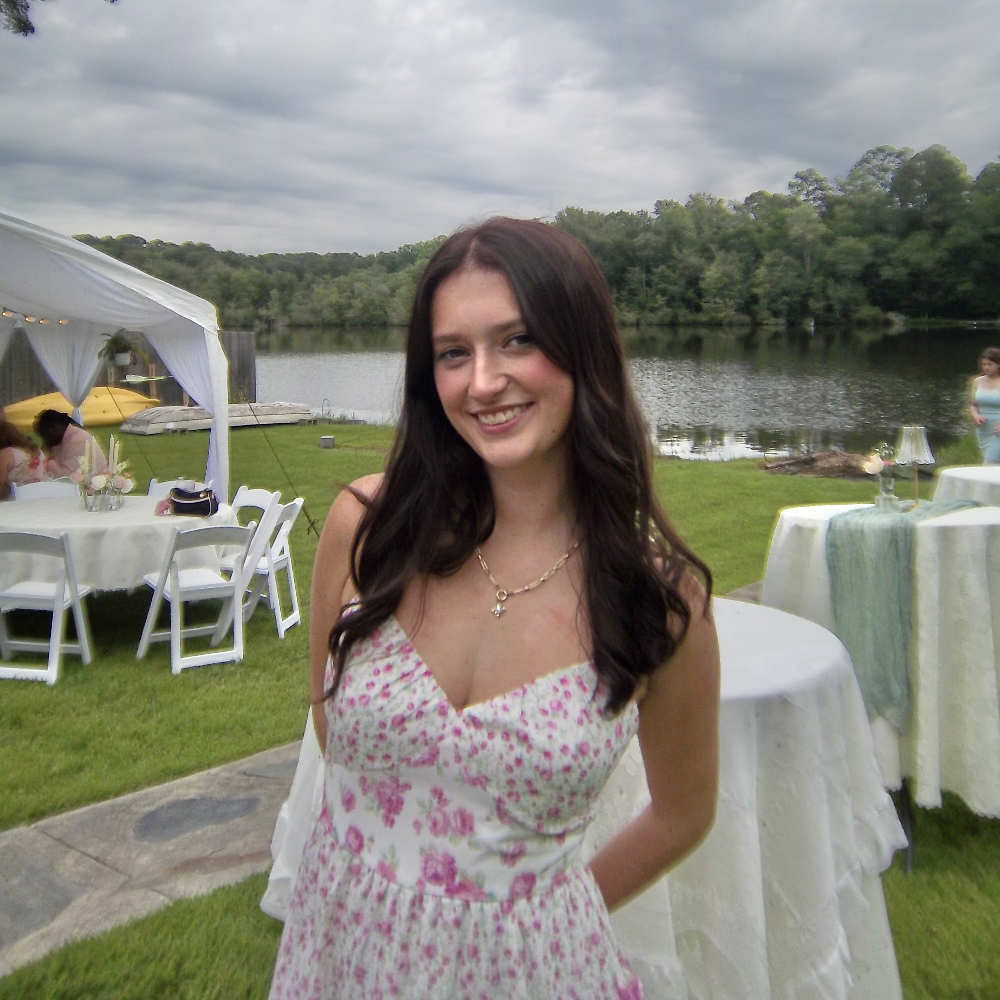

A little about me

Add your portraitto images/me.jpeg')">
Hi, I’m Moe.
I’m a graphic design student at the University of Georgia interested in how design can tell stories, make information digestible, and create more human-centered digital experiences.
As a Student Assistant Graphic Designer with the Hargrett Library, I contribute to exhibit, educational, and promotional projects. I’m also pursuing a New Media Certificate (Dev Track) and an Entrepreneurship Certificate, bringing visual design together with web development, user experience, and creative problem-solving.
I love work that balances a clear system with personality.
Graphic design
Identity, print, layout, and visual storytelling.
Web & UX
Useful interfaces, clear structure, and playful interactions.
Curiosity first
Research, experimentation, and thoughtful details.